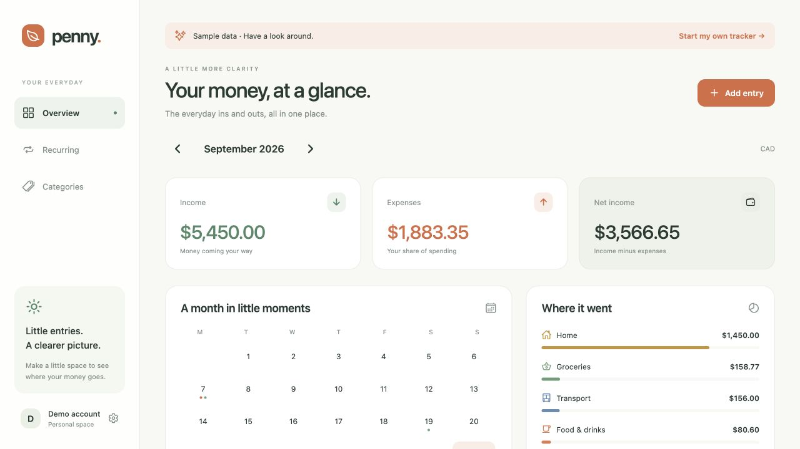
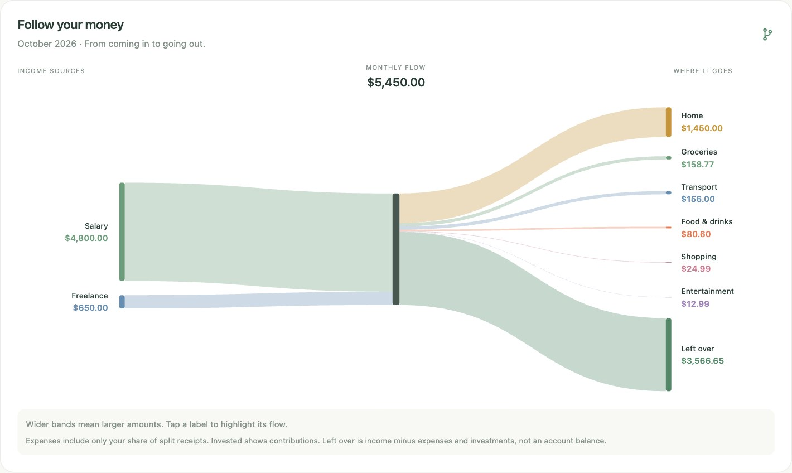
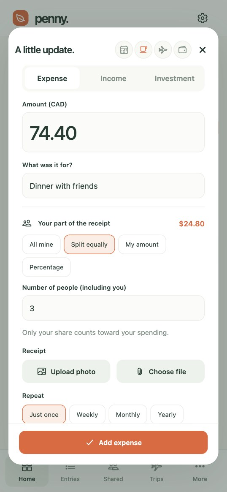

iPhone & iPad
Native SwiftUI, with Home Screen widgets and Face ID app lock.
Self-hosted expense tracking · iPhone, iPad & web
Track expenses, income and investment contributions. Split the bill, keep the receipt, and see where every dollar went, on a server you run yourself.
No bank connection. No ads. Your server, your data.
Overview
See what came in, what you spent, what you invested and what's left. Expected recurring income is part of the picture before payday arrives, clearly labeled as projected. Explore the calendar and category breakdown, then search and filter every transaction.

Money flow
An interactive flow diagram connects income to spending, investments and money left over. Split expenses count only your share, so the picture reflects your spending, not the whole bill.

Entries
Record an expense, income or investment contribution. Split a bill equally, by amount or by percentage; attach a photo or PDF; make regular entries recurring. Receipts are encrypted at rest on your server.

Apps
A native SwiftUI app for iPhone and iPad, with widgets and Face ID lock, and a fast web app for everything else. Personal changes save offline and sync when you're back, through a .NET and PostgreSQL server you host.
Native SwiftUI, with Home Screen widgets and Face ID app lock.
The full app in any browser, from phone width to a wide desktop.
Edits are kept on the device and merged when it reconnects.
Local accounts or your own OpenID Connect provider.
Self-host
One Compose file starts PostgreSQL, the API and the web app. There's also a NixOS module. Fill in the secrets, point your reverse proxy at it, and you're done.
# deploy/.env from deploy/.env.example, then:
docker compose -f deploy/compose.yaml up -d --waitPenny tracks investment contributions, not portfolio performance, and never connects to your bank.